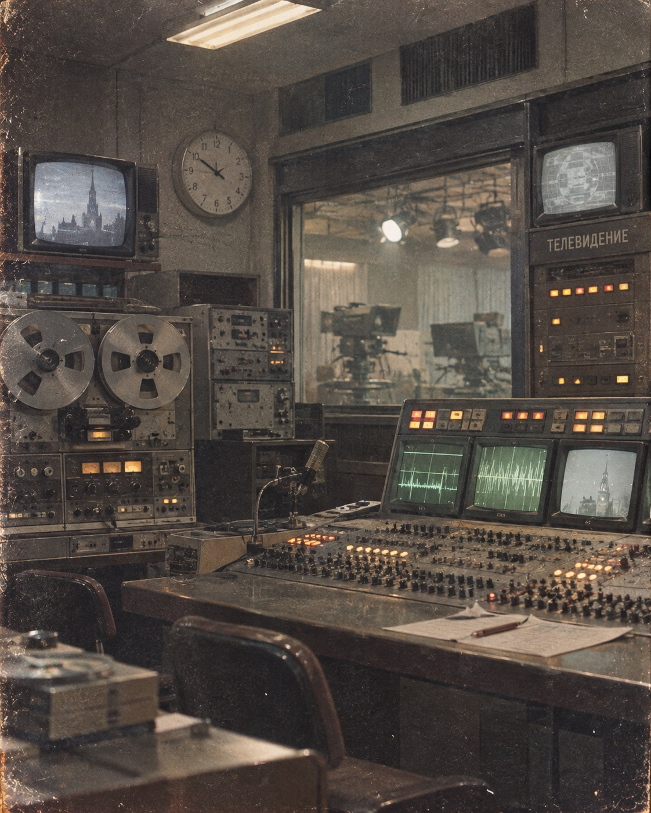

RADIUS ARCHIVE / About
Inside RADIUS ARCHIVE
RADIUS ARCHIVE is an independent label grown from the archives of the RADIUS Television Center — a lost broadcasting facility in the closed scientific city of Radinsk.
The Television Center operated between 1976 and 1998, producing internal broadcasts, cultural and music programs, documentaries, and late-night transmissions for the city's residents. Over time, recordings from the center were scattered, forgotten, or simply disappeared.
The label releases what survived.
We release music, album covers, photographs, biographies, broadcast recordings, and other materials as fragments of this world. Each project exists within the same universe, but may represent a different period, archive collection, or forgotten story.
One question we hear often is: “Is this a real label, or a fictional project?”
The answer is: both.
RADIUS ARCHIVE is an independent label built on a fictional archive, created through human authorship and AI-assisted technologies. The materials are not presented as genuine historical recordings. They are releases from an archive that never existed — or perhaps existed somewhere slightly different from our own reality.
What matters to us is the feeling of discovery: the sense of finding an old cassette, a forgotten television transmission, or a record from a place that seems strangely familiar.
The technology is only part of the process. The real purpose is to keep this world alive — lived-in, imperfect, and distant, preserved through fragments.
Thank you for listening, exploring, and helping keep the signal alive.
— RADIUS ARCHIVE
📡 “If this music feels familiar, perhaps the signal simply arrived from a neighboring reality.”

Radinsk · Late 1970s.
Chronicle of the Signal
Foundation
The RADIUS Television Center begins internal broadcasting in the closed city of Radinsk.
Experimental Era
Music programs, field expeditions, and the first experimental audio archives are recorded.
Transition
The Television Center faces reorganization. Many recordings are lost or scattered.
Silence
Broadcasting officially ceases. The remaining archives are sealed and forgotten.
Restoration
RADIUS ARCHIVE begins digitizing and reconstructing the surviving fragments.
Archive Submissions
Have a recording, photograph, document, or story connected to the RADIUS Television Center? We are interested in forgotten broadcasts, unidentified tapes, and fragments from the archive.
Send a private link or a short description of the material.
About the Materials
RADIUS ARCHIVE brings together music, recordings, album covers, photographs, biographies, broadcast fragments, and other materials from the history of the RADIUS Television Center.
Each project represents a different fragment of the archive. Some materials appear as lost recordings, forgotten releases, or recovered documents, while others explore stories and artists that exist only within the RADIUS ARCHIVE universe.
Disclaimer
RADIUS ARCHIVE is an independent label built on a fictional archive, created through human authorship and AI-assisted technologies. The materials presented here are not genuine historical recordings or documents.